Passivity-Based Bayesian Control of Robotic Systems
TEROS 2026

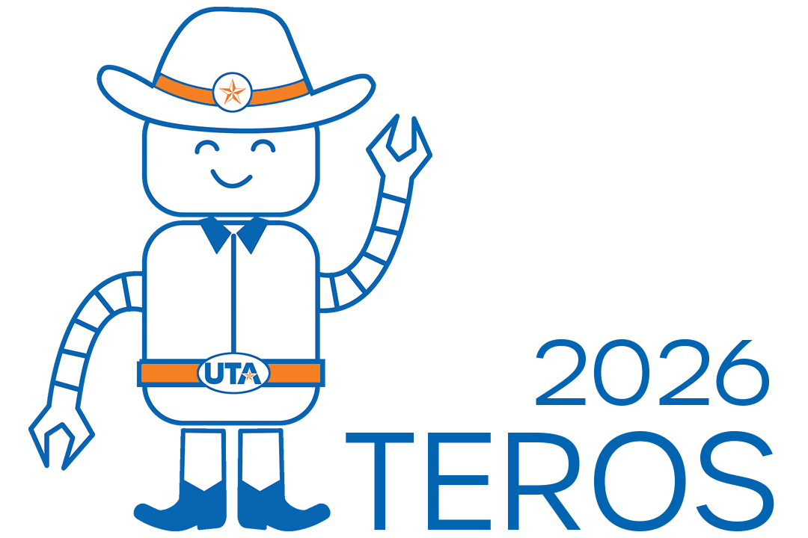
Aykut C. Satici
Department of Systems Engineering
University of Texas at Dallas
2026-03-29
Underactuation
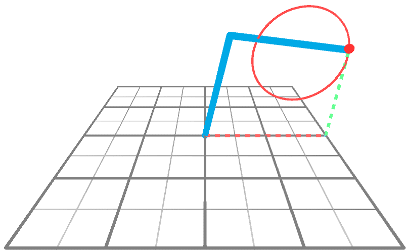
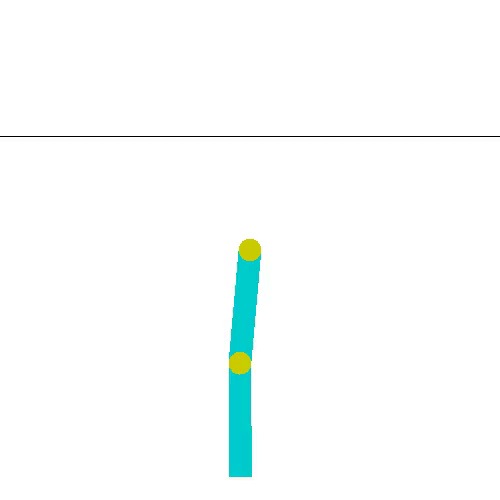
Underactuation
- There is not enough control inputs to generate arbitrary accelerations.
- Makes the control problem much more complicated.
Underactuated Robots
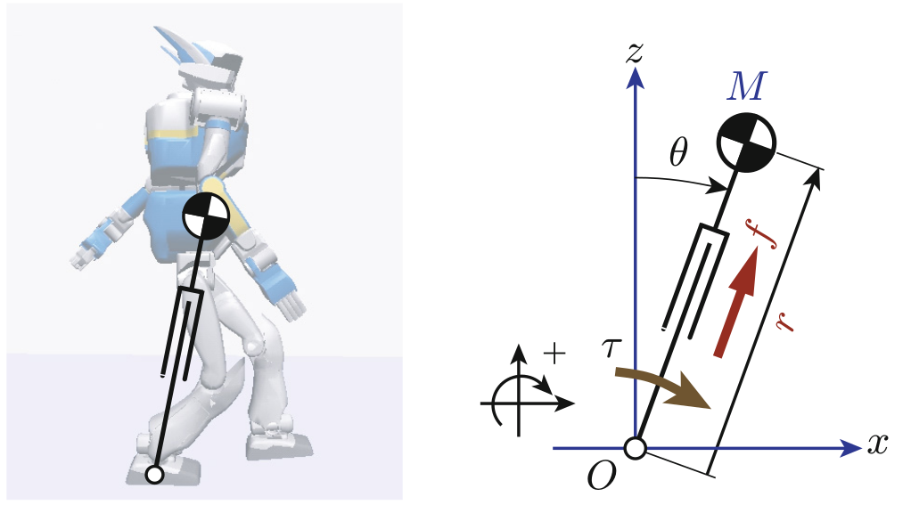
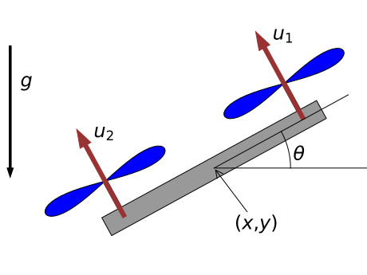
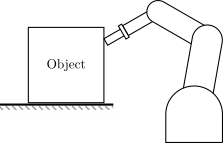
Existing Methods
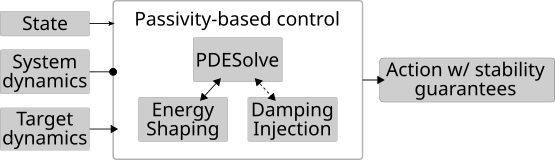
- Strengths
-
Stability guarantees
Closed-form policy - Weaknesses
-
Model uncertainties
Need to solve PDEs
Reinforcement learning
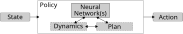
- Strengths
-
More general
Unknown dynamics OK - Weaknesses
-
Sample complexity
Stability guarantees?
Our Methods
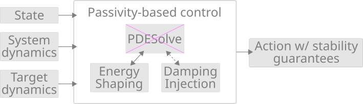
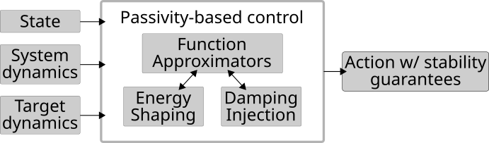
- Systematic approach
- Prior domain knowledge
- Stability is intrinsic (subject to successful learning)
- Model uncertainty considerations possible
Robustness via Bayesian Learning
System Parameter Uncertainty and Measurement Noise
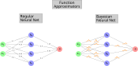
Less robust
More robust
Background
Passivity-Based Control (PBC) and Bayesian Learning
Passivity-Based Control (PBC)
\[ \Sigma_o: \quad \begin{cases} \dot{x} &= f(x) + g(x)u, \\ y &= h(x) \end{cases} \]
Main idea — Select \(u(x) = u_{es} + u_{di}\) that renders the closed-loop system passive.
\[ \Sigma_d: \quad \begin{cases} \dot{x} &= f_d(x) + g(x) u_{di}, \quad f_d := f(x) + g(x) u_{es}(x) \\ y_d &= h_d(x) \end{cases} \]
Control problem is cast as a search for \(H_d\) and \(h_d\) s.t. \(\dot{H}_d \leq y_d^\top u_{di}\)
Our Methods
| NeuralPbc | NeuralIdaPbc |
|---|---|
| \(H_d\) neural net | \(H_d\) quadratic in \(p\) |
| Sample state space | Sample configuration space |
| No stability certificate | Stability certificate |
| More flexible | As applicable as IdaPbc |
Bayesian Learning
\[ p(\theta \mid \mathcal{D}) = \frac{\overbrace{p(\mathcal{D} \mid \theta)}^{\text{likelihood}}\overbrace{p(\theta)}^{\text{prior}}} {\underbrace{\int_\theta p(\mathcal{D} \mid \theta^\prime)p(\theta^\prime) d\theta^\prime}_{\text{evidence}}} \underbrace{\approx q(\theta; z)}_{\text{VI}}. \]
KL-divergence and ELBO
\[ \begin{aligned} D_{\text{KL}} &= \mathbb{E}_{\theta \sim q}\left[ \log \frac{q(\theta; z)}{p(\theta \mid \mathcal{D})}\right] \\ &= \log p(\mathcal{D}) - \mathbb{E}_{\theta \sim q}\left[ \log \frac{p(\mathcal{D} \mid \theta) p(\theta)}{q(\theta; z)} \right] \\ \mathcal{L}(\mathcal{D}; z) &= \mathbb{E}_{\theta \sim q}\left[ \log p(\mathcal{D} \mid \theta) p(\theta) - \log q(\theta; z) \right] \end{aligned} \]
Prediction through marginalization
\[ \begin{aligned} \hat{m} &= \frac{1}{N}\sum_{\theta \sim q} m(x, \theta). \end{aligned} \]
Why Bayesian Learning?
Why does Bayesian learning produce more robust controllers?
Scalar Stochastic Control System
- Uncertain drift vector field: \(p \sim \mathcal{N}(\hat{p}, \sigma_p^2)\).
- Measurement uncertainty: \(x_{\text{meas}} \sim \mathcal{N}(x, \sigma^2)\).
- Linear controller: \(u(x) = \theta x\)
\[ \Sigma_{\text{det}}: \quad \begin{cases} \dot{x} = px + u, \\ u(x) = \theta x, \\ x(0) = 1. \end{cases} \]
\[ \Sigma_{\text{stoc}}: \quad \begin{cases} dx(t) = (p+\theta)x(t)\, dt + \theta \sigma\, dW_t, \\ x(0) = 1. \end{cases} \]
\[ x(t) = e^{(p+\theta)t} + \theta \sigma \int_0^t e^{(p+\theta)(t-s)}\,dW_s. \]
Quadratic Best Performance
\[ \mathcal{J} = \int_0^T \left( \frac{1}{2}qx(t)^2 + \frac{1}{2}ru(t)^2 \right)dt, \quad q \geq 0, \; r > 0. \]
Lemma
The conditional expectation \(\mathbb{E}[\mathcal{J} \mid p]\) of the performance index given the system parameter \(p\) is
\[ \mathbb{E}[\mathcal{J} \mid p] = -\frac{1}{4}\frac{q+r\theta^2}{p+\theta}\left[ \theta^2 \sigma^2 T + \left(1-e^{2 T (p+\theta)}\right) \left(1+\frac{1}{2}\frac{\theta^2 \sigma^2}{p+\theta}\right) \right] \]
Optimal Controller
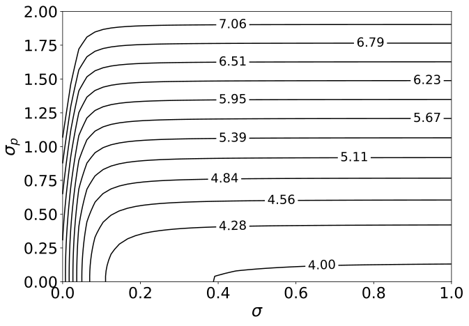
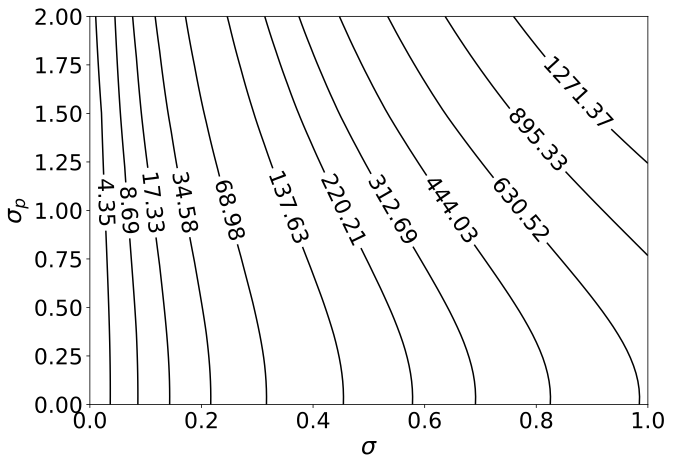
Optimal Controller
- Optimal control parameter a nontrivial function of \(\sigma\) and \(\sigma_p\).
- Bayesian learning strikes the right trade-off.
Passivity-Based Bayesian Control of Robotic Systems • Aykut C. Satici